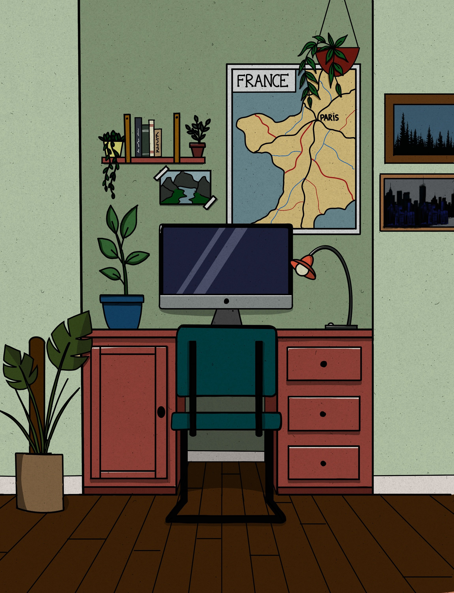
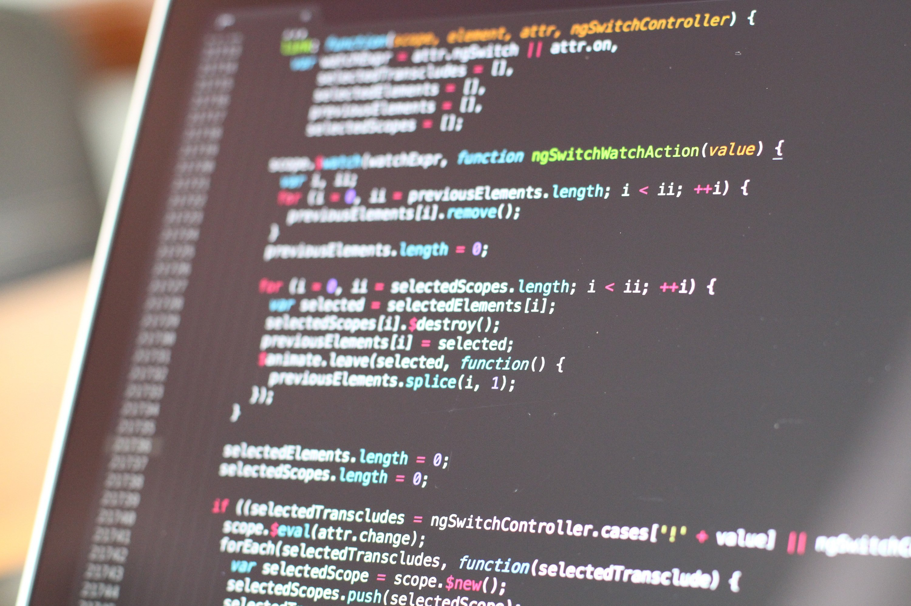

An abstract representation of digital technology
featuring binary code flowing through a circuit board background.
Bright blue and green colors dominate the image, giving it a futuristic feel.
This visual conveys the essence of programming, data processing,
and the interconnectedness of modern computing technologies,
inspiring thoughts about the future of software development.
A group of diverse software developers gathered around a table in a modern tech office.
They are engaged in a brainstorming session,
discussing project ideas with laptops open in front of them.
The environment is bright and energetic, with whiteboards filled with diagrams and sticky notes,
symbolizing teamwork and innovation in technology.

A close-up shot of a computer screen showing a code editor
filled with colorful syntax highlighting.
The code is neatly organized,
featuring functions and comments that enhance readability.
The background is slightly blurred, drawing attention to
the intricate details of the programming language being used,
howcasing the artistry of coding.
A focused programmer sitting at a desk with multiple monitors displaying
lines of code. The room is dimly lit, with ambient lighting creating a cozy atmosphere.
The programmer is typing on a mechanical keyboard, surrounded by coding books and a coffee cup,
emphasizing the dedication and passion for software development.